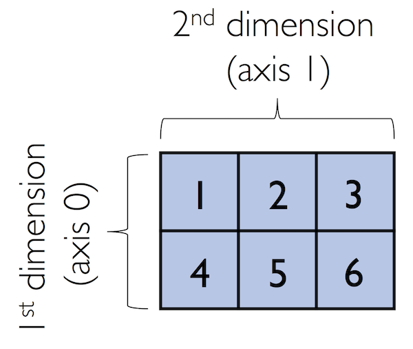
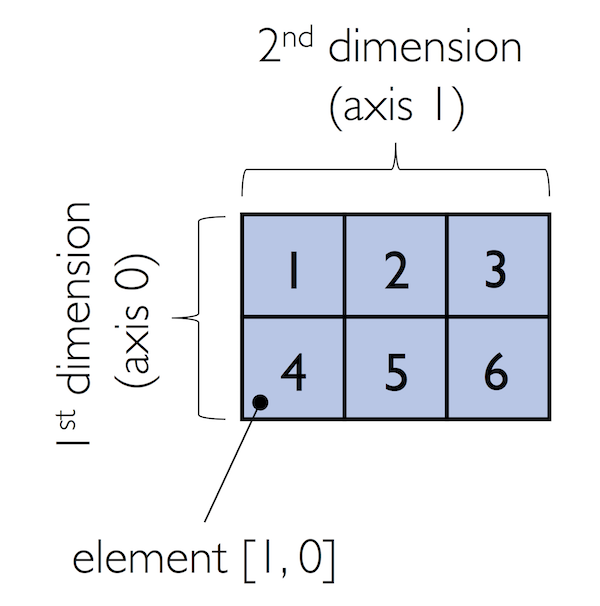
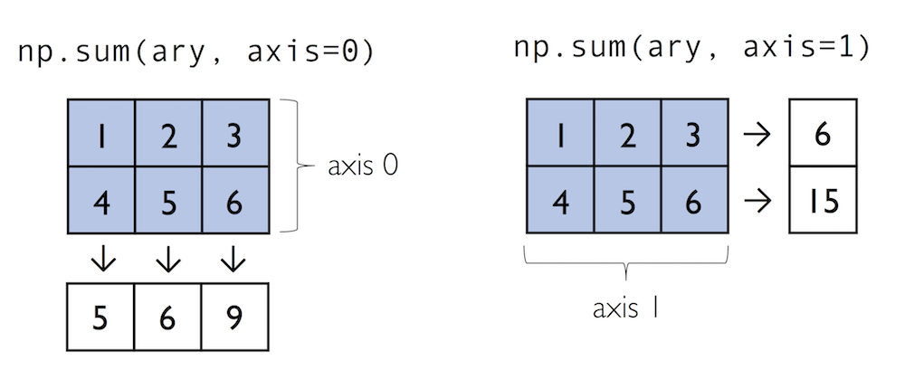
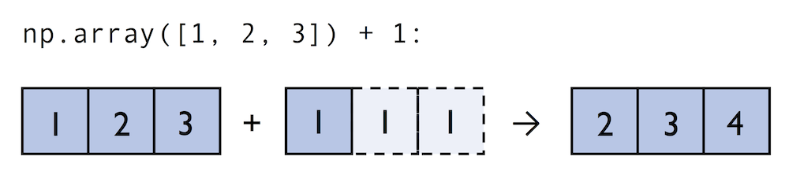
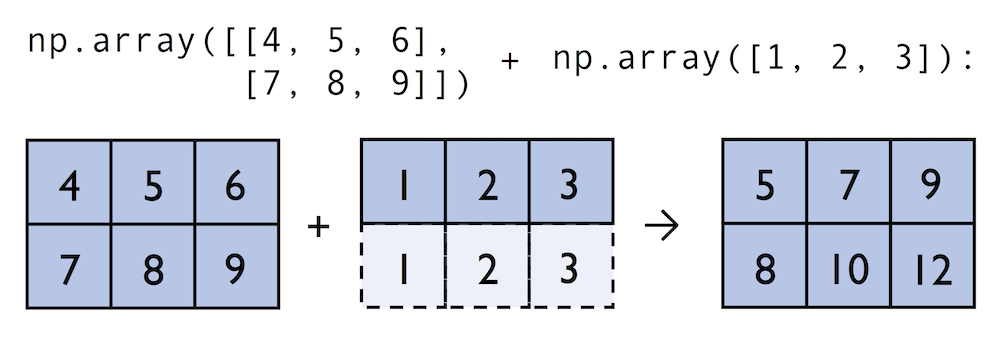
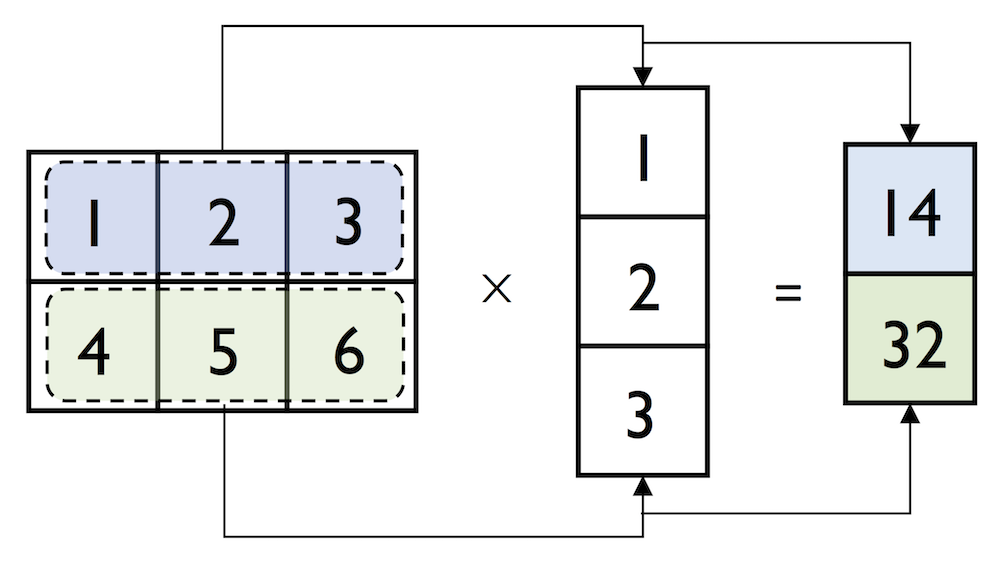

import numpy as npLecture 5 - NumPy for Array Operations


- 5.1 Introduction to NumPy
- 5.2 Array Construction and Indexing
- 5.3 Array Math
- 5.4 Broadcasting
- 5.5 Random Number Generators
- 5.6 Reshaping NumPy Arrays
- 5.7 Linear Algebra with NumPy
- Appendix: NumPy Performance
- References
5.1 Introduction to NumPy
NumPy (short for Numerical Python) was created in 2005, and since then, the NumPy library has evolved into an essential library for scientific computing in Python. It has become a building block of many other scientific libraries, such as SciPy, Scikit-learn, Pandas, and others.
NumPy provides a convenient Python interface for working with multi-dimensional array data structures. The NumPy array data structure is also called ndarray, which is short for n-dimensional array.
In addition to being mostly implemented in C and using Python as a “glue language,” the main reason why NumPy is so efficient for numerical computations is that NumPy arrays use contiguous blocks of memory that can be efficiently cached by the CPU. In contrast, Python lists are arrays of pointers to objects in random locations in memory, which cannot be easily cached and come with a more expensive memory look-up. In addition, NumPy arrays have a fixed size and are homogeneous, which means that all elements in an array must have the same type. Homogenous ndarray objects have the advantage that NumPy can carry out operations using efficient C code and avoid expensive type checks and related resource-consuming Python operations.
5.1.1 N-dimensional Arrays
NumPy is built around ndarrays objects, which are multi-dimensional array data structures. Intuitively, we can think of a one-dimensional NumPy array as a vector of elements – you may think of it as a fixed-size Python list where all elements share the same type. Similarly, we can think of a two-dimensional array as a data structure to represent a matrix (or a Python list of lists). NumPy arrays can have up to 32 dimensions. For instance, RGB images have 3 dimensions, corresponding to pixels width and height, and the three color channels. Similarly, an RGB video has 4 dimensions, corresponding to pixels width and height, color channel, and frame number.
In this next example, we will call the array function first to create an one-dimensional NumPy array, and afterward, a two-dimensional NumPy array, consisting of two rows and three columns (from a list of lists).
ary1d = [1., 2., 3.]
np.array(ary1d)array([1., 2., 3.])lst = [[1, 2, 3],
[4, 5, 6]]
ary2d = np.array(lst)
ary2d
# rows x columnsarray([[1, 2, 3],
[4, 5, 6]])
Figure source: Reference [1].By default, NumPy infers the type of the array upon construction. Since in the second example we passed Python integers to the 2D array, the ndarray object ary2d should be of type int64, which we can confirm by accessing the dtype (data type) attribute.
ary2d.dtypedtype('int64')If we want to construct NumPy arrays of different types, we can pass an argument for the dtype parameter of the array using the astype method (for example np.int32 to create 32-bit arrays). For a full list of supported data types, please refer to the official NumPy documentation.
int64_ary = ary2d.astype(dtype=np.int64)
int64_aryarray([[1, 2, 3],
[4, 5, 6]])float32_ary = ary2d.astype(dtype=np.float32)
float32_aryarray([[1., 2., 3.],
[4., 5., 6.]], dtype=float32)float32_ary.dtypedtype('float32')To return the number of elements in an array, we can use the size attribute, as shown below.
ary2d.size6And the number of dimensions of our array can be obtained via the ndim attribute.
ary2d.ndim2If we are interested in the number of elements along each array dimension (in the context of NumPy arrays, we may also refer to the array dimensions as axes), we can access the shape attribute as shown below.
ary2d.shape(2, 3)The shape of arrays is a tuple. In the code example above, the two-dimensional ary2d object has two rows and three columns, (2, 3).
The shape of a one-dimensional array only contains a single value.
np.array([1., 2., 3.]).shape(3,)5.2 Array Construction and Indexing
This section provides several useful functions to construct arrays, e.g., containing only ones or zeros.
np.ones((3, 4), dtype=int)array([[1, 1, 1, 1],
[1, 1, 1, 1],
[1, 1, 1, 1]])np.zeros((3, 3))array([[0., 0., 0.],
[0., 0., 0.],
[0., 0., 0.]])We can use these functions to create arrays with arbitrary values, e.g., we can create an array containing the values 99 as follows.
np.zeros((3, 3)) + 99array([[99., 99., 99.],
[99., 99., 99.],
[99., 99., 99.]])Creating arrays of ones or zeros can also be useful as placeholder arrays, in cases where we do not want to use the initial values for computations right away.
NumPy also has functions to create identity matrices and diagonal matrices as ndarrays.
np.eye(3)array([[1., 0., 0.],
[0., 1., 0.],
[0., 0., 1.]])np.diag((1, 2, 3))array([[1, 0, 0],
[0, 2, 0],
[0, 0, 3]])Two other very useful functions for creating sequences of numbers within a specified range are arange and linspace. NumPy’s arange function follows the same syntax as Python’s range function. If two arguments are provided, the first argument represents the start value and the second argument defines the stop value of a half-open interval.
np.arange(4, 10)array([4, 5, 6, 7, 8, 9])If we only provide a single argument, the default start value of 0 is assumed.
np.arange(5)array([0, 1, 2, 3, 4])Similar to Python’s range, a third argument can be provided to define the step (the default step size is 1). For example, we can obtain an array of all values between 1 and 11 with 0.1 step as follows.
ary3 = np.arange(1., 11., 0.1)
ary3array([ 1. , 1.1, 1.2, 1.3, 1.4, 1.5, 1.6, 1.7, 1.8, 1.9, 2. ,
2.1, 2.2, 2.3, 2.4, 2.5, 2.6, 2.7, 2.8, 2.9, 3. , 3.1,
3.2, 3.3, 3.4, 3.5, 3.6, 3.7, 3.8, 3.9, 4. , 4.1, 4.2,
4.3, 4.4, 4.5, 4.6, 4.7, 4.8, 4.9, 5. , 5.1, 5.2, 5.3,
5.4, 5.5, 5.6, 5.7, 5.8, 5.9, 6. , 6.1, 6.2, 6.3, 6.4,
6.5, 6.6, 6.7, 6.8, 6.9, 7. , 7.1, 7.2, 7.3, 7.4, 7.5,
7.6, 7.7, 7.8, 7.9, 8. , 8.1, 8.2, 8.3, 8.4, 8.5, 8.6,
8.7, 8.8, 8.9, 9. , 9.1, 9.2, 9.3, 9.4, 9.5, 9.6, 9.7,
9.8, 9.9, 10. , 10.1, 10.2, 10.3, 10.4, 10.5, 10.6, 10.7, 10.8,
10.9])Note the shape of the above array.
np.shape(ary3)(100,)The linspace function is especially useful if we want to create a number of evenly spaced values in a specified interval. In the next cell, we created a array of 5 values evenly spaced between 6 and 25.
np.linspace(6., 25., num=5)array([ 6. , 10.75, 15.5 , 20.25, 25. ])5.2.1 Array Indexing
Simple NumPy indexing and slicing work similar to Python lists, as in the following examples.
ary = np.array([1, 2, 3, 4])
print(ary[2])3Also, the same Python semantics apply to slicing operations. The following example shows how to fetch the first three elements in ary.
ary[0:3] array([1, 2, 3])If we work with arrays that have more than one dimension or axis, we separate our indexing or slicing operations by commas as shown in the following examples.
ary = np.array([[1, 2, 3],
[4, 5, 6]])
print(ary[0, -2]) # first row, second from last element2print(ary[-1, -1]) # lower right6print(ary[1, 1]) # first row, second column5
Figure source: Reference [1].ary[:, 0] # entire first columnarray([1, 4])ary[:, :2] # first two columnsarray([[1, 2],
[4, 5]])5.3 Array Math
One of the core features of NumPy that makes working with ndarray so efficient and convenient is vectorization. NumPy provides vectorized functions for performing element-wise operations implicitly via so-called ufuncs which is short for “universal functions”.
There are more than 60 ufuncs available in NumPy. ufuncs are implemented in compiled C code and are very fast and efficient compared to Python.
To provide an example of a simple ufunc for element-wise addition, consider the following example, where we add a scalar 1 to each element in a nested Python list.
# Element-wise addition in Python
lst = [[1, 2, 3],
[4, 5, 6]] # 2d array
for row_idx, row_val in enumerate(lst):
for col_idx, col_val in enumerate(row_val):
lst[row_idx][col_idx] += 1
lst[[2, 3, 4], [5, 6, 7]]We can accomplish the same using NumPy’s ufunc for element-wise scalar addition as shown below.
# Element-wise addition in NumPy
ary = np.array([[1, 2, 3], [4, 5, 6]])
ary = np.add(ary, 1)
aryarray([[2, 3, 4],
[5, 6, 7]])For basic arithmetic operations we can use add, subtract, divide, multiply, power, and exp (exponential). However, NumPy uses operator overloading, and therefore, we can directly use mathematical operators (+, -, /, *, and **).
np.add(ary, 1)array([[3, 4, 5],
[6, 7, 8]])ary + 1array([[3, 4, 5],
[6, 7, 8]])np.power(ary, 2)array([[ 4, 9, 16],
[25, 36, 49]])ary**2array([[ 4, 9, 16],
[25, 36, 49]])NumPy also has implementations for other math operations, such as sqrt (square root), log (natural logarithm), and log10 (base-10 logarithm).
np.sqrt(ary)array([[1.41421356, 1.73205081, 2. ],
[2.23606798, 2.44948974, 2.64575131]])Often, we want to compute the sum or product of array elements along a given axis. For this purpose, we can use the reduce operation. By default, reduce applies an operation along the first axis (axis=0). In the case of a two-dimensional array, we can think of the first axis as the rows of a matrix. Thus, adding up elements along rows yields the column sums of that matrix as shown below.
ary = np.array([[1, 2, 3],
[4, 5, 6]]) # rolling over the 1st axis, axis 0
np.add.reduce(ary, axis=0)array([5, 7, 9])To compute the row sums of the array above, we can specify axis=1.
np.add.reduce(ary, axis=1) # row sumsarray([ 6, 15])NumPy also provides functions for specific operations such as product and sum. For example, sum(axis=0) is equivalent to add.reduce.
ary.sum(axis=0) # column sumsarray([5, 7, 9])ary.sum(axis=1) # row sumsarray([ 6, 15])
Figure source: Reference [1].Note also that product and sum both compute the product or sum of the entire array if we do not specify an axis.
print(ary.sum())21Other useful ufuncs are:
np.mean(computes arithmetic mean, i.e., average)np.std(computes the standard deviation)np.var(computes variance)np.sort(sorts an array)np.argsort(returns indices that would sort an array)np.min(returns the minimum value of an array)np.max(returns the maximum value of an array)np.argmin(returns the index of the minimum value)np.argmax(returns the index of the maximum value)np.array_equal(checks if two arrays have the same shape and elements)
5.4 Broadcasting
Broadcasting allows to perform vectorized operations between two arrays even if their dimensions do not match.
ary1 = np.array([1, 2, 3])
ary1 + 1array([2, 3, 4])# this is equivalent to:
ary1 + np.array([1, 1, 1])array([2, 3, 4])
Figure source: Reference [1].For example, we can add a one-dimensional to a two-dimensional array, where NumPy creates an implicit multidimensional grid from the one-dimensional array ary1.
ary2 = np.array([[4, 5, 6],
[7, 8, 9]])
ary2 + ary1array([[ 5, 7, 9],
[ 8, 10, 12]])
Figure source: Reference [1].Using broadcasting in Python requires compatibility between the sizes of the arrays. For instance, if we try to add two arrays of sizes (3,3) and (2,2), Python will return an error.
np.ones((3,3)) + np.ones((2,2))--------------------------------------------------------------------------- ValueError Traceback (most recent call last) Cell In[44], line 1 ----> 1 np.ones((3,3)) + np.ones((2,2)) ValueError: operands could not be broadcast together with shapes (3,3) (2,2)
5.4.1 Advanced Indexing: Memory Views and Copies
In the previous sections, we used basic indexing and slicing routines. It is important to note that basic integer-based indexing and slicing create so-called views of NumPy arrays in the memory. Working with views can be highly desirable since it avoids making unnecessary copies of arrays to save memory resources. To illustrate the concept of memory views, let’s look at a simple example where we access the first row in an array, assign it to a variable, and modify that variable.
ary = np.array([[1, 2, 3],
[4, 5, 6]])
first_row = ary[0, :]first_rowarray([1, 2, 3])first_row += 99first_rowarray([100, 101, 102])As expected, first_row was modified, now containing the original values in the first row incremented by 99.
Note, however, that the original array was modified as well. The reason for this is that ary[0, :] created a view of the first row in ary, and its elements were then incremented by 99.
aryarray([[100, 101, 102],
[ 4, 5, 6]])The same concept applies to slicing operations.
ary = np.array([[1, 2, 3],
[4, 5, 6]])
last_col = ary[:, 2]
last_col += 99
aryarray([[ 1, 2, 102],
[ 4, 5, 105]])Therefore, it is important to be aware that indexing and slicing create views, which can speed up our code by avoiding to create unnecessary copies in memory. However, in certain scenarios we want to create a copy of an array; we can do this via the copy method as shown below.
ary = np.array([[1, 2, 3],
[4, 5, 6]])
first_row = ary[0].copy()
first_row += 99first_rowarray([100, 101, 102])aryarray([[1, 2, 3],
[4, 5, 6]])On the other hand, slicing a list in Python creates a copy, and it does not change the original list.
list1 = [[1, 2, 3], [4, 5, 6]]first_row_list = list1[0]
first_row_list[1, 2, 3]# cannot broadcast
first_row_list + 99--------------------------------------------------------------------------- TypeError Traceback (most recent call last) Cell In[56], line 2 1 # cannot broadcast ----> 2 first_row_list + 99 TypeError: can only concatenate list (not "int") to list
# note that 99 is concatenated
first_row_list + [99][1, 2, 3, 99]# the original list is not changed
list1[[1, 2, 3], [4, 5, 6]]5.4.2 Fancy Indexing
In addition to basic single-integer indexing and slicing operations, NumPy supports advanced indexing routines called fancy indexing. Via fancy indexing, we can use tuple or list objects of non-contiguous integer indices to return desired array elements. Since fancy indexing can be performed with non-contiguous sequences, it cannot return a view – a contiguous slice from memory. Thus, fancy indexing always returns a copy of an array: it is important to keep that in mind. The following code snippets show some fancy indexing examples.
ary = np.array([[1, 2, 3],
[4, 5, 6]])
ary[:, [0, 2]] # first and and last columnarray([[1, 3],
[4, 6]])this_is_a_copy = ary[:, [0, 2]]
this_is_a_copy += 99Note that the values in this_is_a_copy were incremented as expected.
this_is_a_copyarray([[100, 102],
[103, 105]])However, the contents of the original array remain unaffected.
aryarray([[1, 2, 3],
[4, 5, 6]])5.4.3 Boolean Masks for Indexing
We can also use Boolean masks for indexing, that is, arrays of True and False values. Consider the following example, where we return all values in the array that are greater than 3.
ary = np.array([[1, 2, 3],
[4, 5, 6]])
greater3_mask = ary > 3
greater3_maskarray([[False, False, False],
[ True, True, True]])Using these masks, we can select elements given our desired criteria.
ary[greater3_mask]array([4, 5, 6])Or, we can also write this as follows.
ary[ary>3]array([4, 5, 6])We can also chain different selection criteria using the logical and operator & or the logical or operator |. The example below demonstrates how we can select array elements that are greater than 3 and divisible by 2.
(ary > 3) & (ary % 2 == 0)array([[False, False, False],
[ True, False, True]])Similar to the previous example, we can use this boolean array as a mask for selecting the respective elements from the array.
ary[(ary > 3) & (ary % 2 == 0)]array([4, 6])And, for example, to negate a condition, we can use the ~ operator:
ary[~((ary < 2) | (ary > 4) )]array([2, 3, 4])A related, useful function to assign values to specific elements in an array is the np.where function. In the example below, we assign a 1 to all values in the array that are greater than 2, and 0 otherwise.
The general syntax is np.where(condition, x, y), and the returned elements are x if the condition is True and y if the condition is False.
ary = np.array([1, 2, 3, 4, 5])
np.where(ary > 2, 1, 0)array([0, 0, 1, 1, 1])temperatures = np.array([-5, 0, 3, 12, -2])
np.where(temperatures < 0, "Freezing", "Above Freezing")array(['Freezing', 'Above Freezing', 'Above Freezing', 'Above Freezing',
'Freezing'], dtype='<U14')If only the condition is provided in np.where, it returns the indices for which the condition is True. Therefore, np.where is often used to find indices of elements in an array that satisfy a certain condition.
np.where(ary == 2)(array([1]),)np.where(ary > 3)(array([3, 4]),)5.5 Random Number Generators
In machine learning and data science, we often need to generate arrays of random numbers, such as the initial values of the model parameters. NumPy has a random subpackage to create random numbers and samples from a variety of distributions.
Let’s start with drawing a random sample of three numbers in the range [0,1] from a uniform distribution via random.rand.
np.random.rand(3)array([0.82330419, 0.50566836, 0.46521335])If we make another draw, we will obtain a different random sample.
np.random.rand(3)array([0.78943044, 0.0192398 , 0.66756885])Numpy also allows to use a fixed random seed for the random number generator, and in that case, the random sample will be same at each draw.
np.random.seed(seed=123)
np.random.rand(3)array([0.69646919, 0.28613933, 0.22685145])np.random.seed(seed=123)
np.random.rand(3)array([0.69646919, 0.28613933, 0.22685145])And, of course, if we change the random seed value, the generated random numbers will be also different.
np.random.seed(seed=43)
np.random.rand(3)array([0.11505457, 0.60906654, 0.13339096])Using a random seed is highly recommended in practical applications and in research projects, since it ensures that our results are reproducible, since using the same seed will create the same random numbers.
We can also create multi-dimensional arrays of random numbers, if needed.
np.random.rand(5,5)array([[0.24058962, 0.32713906, 0.85913749, 0.66609021, 0.54116221],
[0.02901382, 0.7337483 , 0.39495002, 0.80204712, 0.25442113],
[0.05688494, 0.86664864, 0.221029 , 0.40498945, 0.31609647],
[0.0766627 , 0.84322469, 0.84893915, 0.97146509, 0.38537691],
[0.95448813, 0.44575836, 0.66972465, 0.08250005, 0.89709858]])And, we can draw random numbers from other distributions. For instance, random.randn returns random numbers from a normal, i.e., Gaussian, distribution, with mean 0, and variance 1.
np.random.randn(4)array([-1.04683899, -0.88961759, 0.01404054, -0.16082969])Or, for instance if we needed to generate 6 random values from a normal distribution with mean -20 and standard deviation 2, we can write as follows.
-20 + 2*np.random.randn(6)array([-19.21018673, -18.32558995, -22.81575634, -18.38430117,
-20.27656729, -19.62564283])The class RandomState is another way to create and manage random number generators in NumPy. RandomState objects maintain their own state independently of other objects in our code, and this allows for the generation of random numbers without affecting other parts of the program.
rng2 = np.random.RandomState(seed=123)
rng2.rand(3)array([0.69646919, 0.28613933, 0.22685145])In the above code, np.random.RandomState() constructed a random number generator that we named rng2. When we call rng2 to draw random numbers, it uses the specified seed (seed=123) to create random numbers in a controlled way.
Note however that the seed 123 will be applied only to the rng2 object, and it does not affect other variables in our code that use np.random. For instance, we can apply a different random seed to all other np.random functions in our code, e.g., by np.random.seed(seed=11). In other words, np.random.seed(seed=43) is global initializer, and it affects all functions that use np.random in a Python module or script. Conversely, np.random.RandomState() is local initializer, and it affects the random states only for the variable rng2 based on the random seed 123, and it is independent of the other instances that are controlled by the global random number generator with a random seed 11.
5.6 Reshaping NumPy Arrays
In practice, we often run into situations where existing arrays do not have the right shape to perform certain computations. As you might remember from the beginning of this article, the size of NumPy arrays is fixed. Fortunately, this does not mean that we have to create new arrays and copy values from the old array to the new one if we want arrays of different shapes. That is, the size is fixed, but the shape is not. NumPy provides a reshape method that allows to obtain a view of an array with a different shape.
For example, we can reshape a one-dimensional array into a two-dimensional one using reshape as follows.
ary1d = np.array([1, 2, 3, 4, 5, 6])
ary2d_view = ary1d.reshape(2, 3)
ary2d_viewarray([[1, 2, 3],
[4, 5, 6]])np.may_share_memory(ary2d_view, ary1d)TrueThe True value returned from np.may_share_memory indicates that the reshape operation returns a memory view, not a copy.
When using reshape, we need to make sure that the reshaped array has the same number of elements as the original one. Otherwise, we will obtain an error message.
ary2d_view1 = ary1d.reshape(3, 4)--------------------------------------------------------------------------- ValueError Traceback (most recent call last) Cell In[85], line 1 ----> 1 ary2d_view1 = ary1d.reshape(3, 4) ValueError: cannot reshape array of size 6 into shape (3,4)
However, we do not need to specify the number of elements in each axis. NumPy can figure out how many elements to put along an axis if only one axis is unspecified, by using the placeholder -1.
ary1d.reshape(-1, 2)array([[1, 2],
[3, 4],
[5, 6]])We can also use reshape to flatten an array.
ary = np.array([[[1, 2, 3],
[4, 5, 6]]])
ary.reshape(-1)array([1, 2, 3, 4, 5, 6])Other methods for flattening arrays exist, namely flatten, which creates a copy of the array, and ravel, which creates a memory view.
ary.flatten()array([1, 2, 3, 4, 5, 6])ary.ravel()array([1, 2, 3, 4, 5, 6])Sometimes, we are interested in merging different arrays. Unfortunately, there is no efficient way to do this without creating a new array, since NumPy arrays have a fixed size. While combining arrays should be avoided if possible for reasons of computational efficiency, it is sometimes necessary. To combine two or more array objects, we can use NumPy’s concatenate function as shown in the following examples.
ary = np.array([[1, 2, 3]])
# stack along the first axis (here: rows)
np.concatenate((ary, ary), axis=0)array([[1, 2, 3],
[1, 2, 3]])# stack along the second axis (here: columns)
np.concatenate((ary, ary), axis=1)array([[1, 2, 3, 1, 2, 3]])Two related functions are vstack and hstack that stand for vertically or horizontally stacking arrays, respectively.
np.vstack((ary, ary))array([[1, 2, 3],
[1, 2, 3]])np.hstack((ary, ary))array([[1, 2, 3, 1, 2, 3]])5.7 Linear Algebra with NumPy
We can think of one-dimensional NumPy arrays as data structures that represent row vectors.
row_vector = np.array([1, 2, 3])
row_vectorarray([1, 2, 3])row_vector.shape(3,)Similarly, we can use two-dimensional arrays to create column vectors.
column_vector = np.array([1, 2, 3]).reshape(-1, 1)
column_vectorarray([[1],
[2],
[3]])column_vector.shape(3, 1)5.7.1 Matrix Multiplication in NumPy
To perform matrix multiplication between matrices, we know that number of columns of the left matrix must match the number of rows of the matrix to the right. In NumPy, we can perform matrix multiplication via the matmul function.
matrix = np.array([[1, 2, 3],
[4, 5, 6]])np.matmul(matrix, column_vector)array([[14],
[32]])
Figure source: Reference [1].Here is another example.
A = np.array([[1, 2, 3],
[4, 5, 6]])
B = np.array([[7, 8],
[9, 10],
[11, 12]])C = np.matmul(A, B)
Carray([[ 58, 64],
[139, 154]])Alternatively, we can also use the @ operator for matrix multiplication, which is more concise.
D = A @ B
Darray([[ 58, 64],
[139, 154]])Note that we the * operator in NumPy performs element-wise multiplication (Hadamard product), rather than matrix multiplication.
E = np.array([[1, 1],
[2, 2]])
F = np.array([[3, 3],
[4, 4]])E * Farray([[3, 3],
[8, 8]])If we attempt to perform element-wise multiplication of the arrays A and B with the * operator, we get an error message, due to mismatch of their dimensions.
A * B--------------------------------------------------------------------------- ValueError Traceback (most recent call last) Cell In[105], line 1 ----> 1 A * B ValueError: operands could not be broadcast together with shapes (2,3) (3,2)
When multiplying matrices and vectors, NumPy can be quite forgiving if the dimensions of matrices and one-dimensional arrays do not match exactly – thanks to broadcasting. The following example of multiplying the above matrix with a row-vector yields the same result as the multiplication of the matrix with the column vector, except that it returns a one-dimensional array instead of a two-dimensional array.
np.matmul(matrix, row_vector)array([14, 32])# compare to:
np.matmul(matrix, column_vector)array([[14],
[32]])5.7.2 Dot-product in NumPy
NumPy has a special dot function that calculates the dot-product for one-dimensional arrays, i.e., the sum of products of corresponding elements.
row_vectorarray([1, 2, 3])print(np.dot(row_vector, row_vector))14Note in the next cell that the dot product of a row_vector and a column_vector is an array, differently from the dot product of a row_vector and a row_vector in the previous cell which is a scalar.
np.dot(row_vector, column_vector)array([14])Similarly, we can compute the dot-product between two vectors using matmul or the @ operator .
print(row_vector @ row_vector)14print(np.matmul(row_vector, row_vector))145.7.3 Matrix Transpose in NumPy
NumPy also has a handy transpose method to transpose matrices.
matrix = np.array([[1, 2, 3],
[4, 5, 6]])
matrix.transpose()array([[1, 4],
[2, 5],
[3, 6]])There is also a shorthand notation for transpose simply as T.
matrix.Tarray([[1, 4],
[2, 5],
[3, 6]])While this section demonstrates some of the basic linear algebra operations carried out on NumPy arrays that we use in practice, you can find additional functions in the documentation of NumPy’s submodule for linear algebra: numpy.linalg documentation. If you want to perform a particular linear algebra routine that is not implemented in NumPy, it is also worth consulting the scipy.linalg documentation – SciPy is a library for scientific computing built on top of NumPy.
One last note is that there is also a special matrix data type in NumPy. NumPy matrix objects are analogous to NumPy arrays but are restricted to two dimensions. Also, matrices define certain operations differently than arrays; for instance, the * operator performs matrix multiplication instead of element-wise multiplication. However, NumPy matrix is less popular in the science community compared to the more general array data structure.
Appendix: NumPy Performance
The material in the Appendix is not required for quizzes and assignments.
Motivation for Using NumPy: It is Fast!
Let’s compare computing a vector dot product in Python (using lists) and compare it with NumPy’s dot-product function. Mathematically, the dot product between two vectors \(\mathbf{x}\) and \(\mathbf{w}\) can be written as follows:
\[ z = \sum_i x_i w_i = x_1 \times w_1 + x_2 \times w_2 + ... + x_n \times w_n = \mathbf{x}^\top \mathbf{w} \]
First, the Python implementation using a for-loop.
def python_forloop_list_approach(x, w):
z = 0.
for i in range(len(x)):
z += x[i] * w[i]
return z
a = [1., 2., 3.]
b = [4., 5., 6.]
print(python_forloop_list_approach(a, b))32.0Let us compute the runtime for two larger (1000-element) vectors using IPython’s %timeit magic function.
large_a = list(range(1000))
large_b = list(range(1000))
%timeit python_forloop_list_approach(large_a, large_b)189 μs ± 1.92 μs per loop (mean ± std. dev. of 7 runs, 10,000 loops each)Next, we use the dot function/method implemented in NumPy to compute the dot product between two vectors and run %timeit afterwards.
def numpy_dotproduct_approach(x, w):
# same as np.dot(x, w)
# and same as x @ w
return x.dot(w)
a = np.array([1., 2., 3.])
b = np.array([4., 5., 6.])
print(numpy_dotproduct_approach(a, b))32.0large_a = np.arange(1000)
large_b = np.arange(1000)
%timeit numpy_dotproduct_approach(large_a, large_b)4.08 μs ± 158 ns per loop (mean ± std. dev. of 7 runs, 100,000 loops each)As we can see, replacing the for-loop with NumPy’s dot function makes the computation of the vector dot product approximately 50 times faster.
References
- Scientific Computing in Python: Introduction to NumPy and Matplotlib, by Sebastian Raschka, available at: https://sebastianraschka.com/blog/2020/numpy-intro.html.